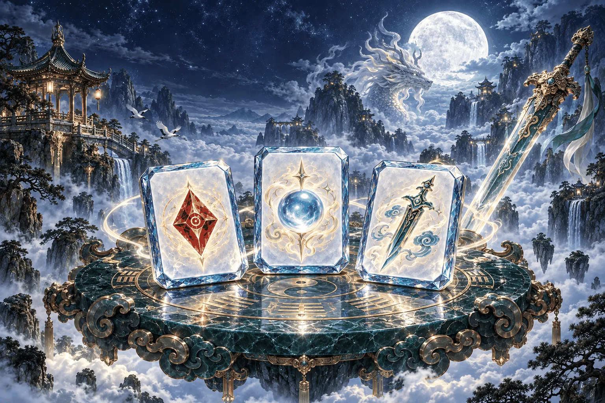
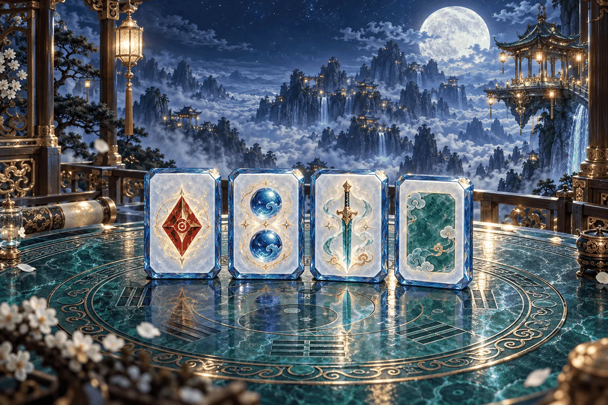
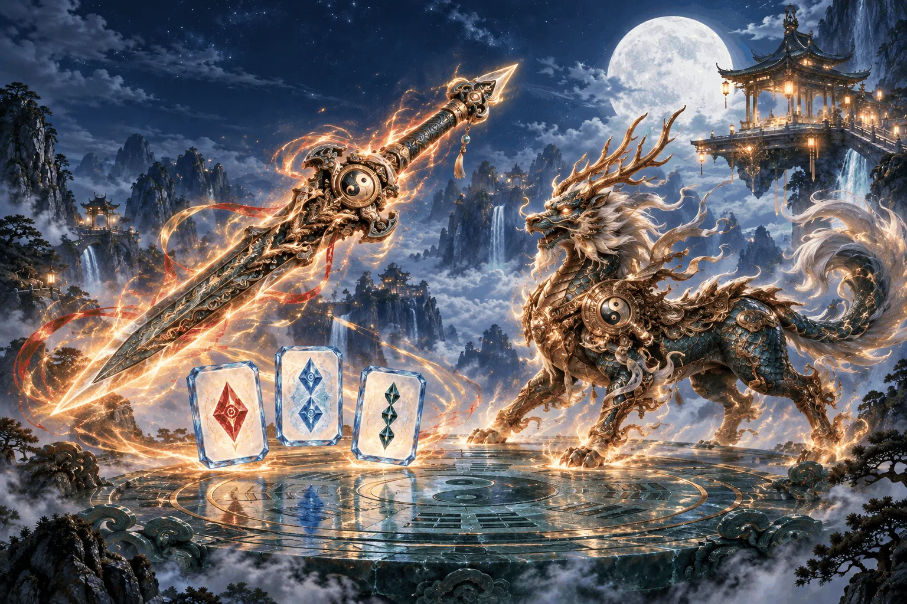

雀 仙 門
請將裝置轉為橫向，即可繼續遊戲。
若畫面沒有旋轉，請先關閉裝置的直向鎖定。
一席論道 · 萬象歸宗
五行晶石麻將
一桌晶石，兩種仙途。以牌會友，或攜手鎮妖。

選擇你的論道之途

台灣十六張規則・五行晶石牌面

五行技能・共同打怪・傷害競逐
正在讀取本機牌局…
單人論道 · 本機保存
雀仙門 · 牌桌選單
封存、讀取與重新開局；門規可調整底分、每台與起始分數。
所有聲音即時生效，關閉選單後保留設定。
調整牌桌特效與桌心資訊的呈現方式。
電腦出牌速度與自己的出牌方式。
晶石牌名對應原有麻將牌種；座位與圈風仍用東南西北。
試聽角色出招聲線與牌名、莊家報讀；需開啟聲音與語音報牌。
查閱技能與終式，並設定招式攻擊特效。
分數與玩家名稱按「套用並開局」後重新開局；聲光設定即時生效。